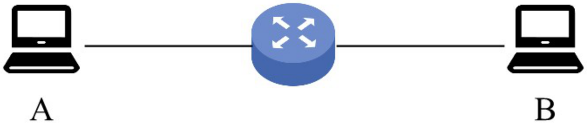
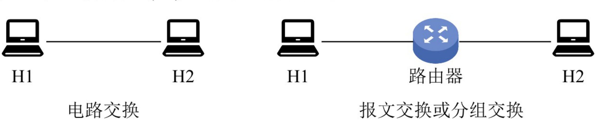
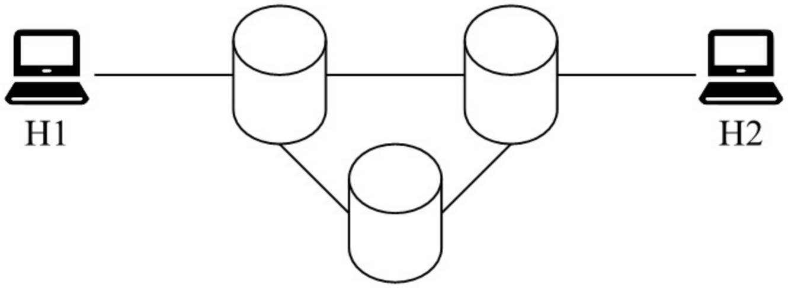
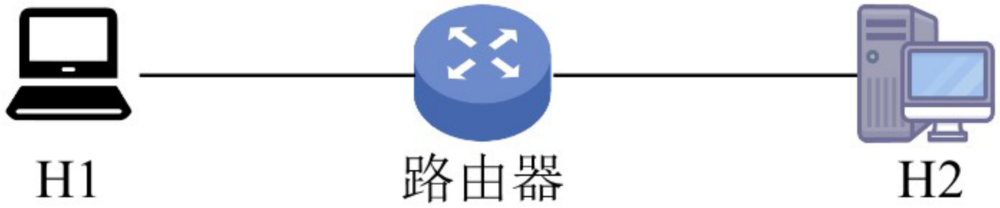
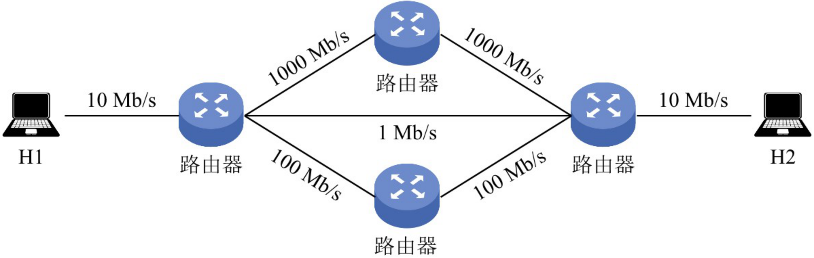
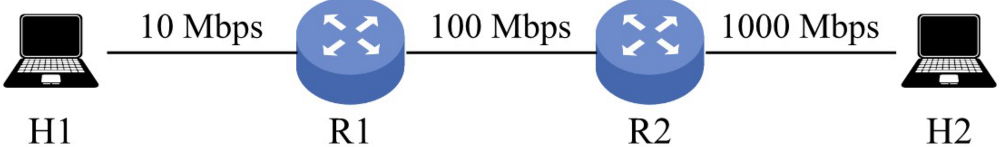
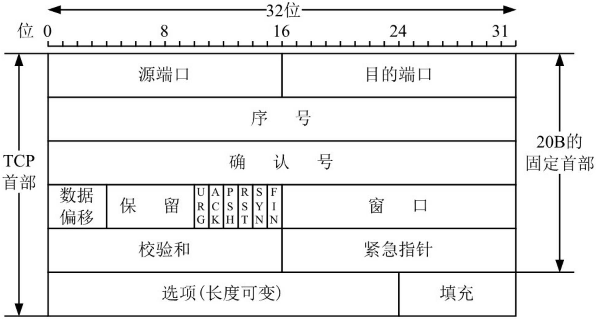
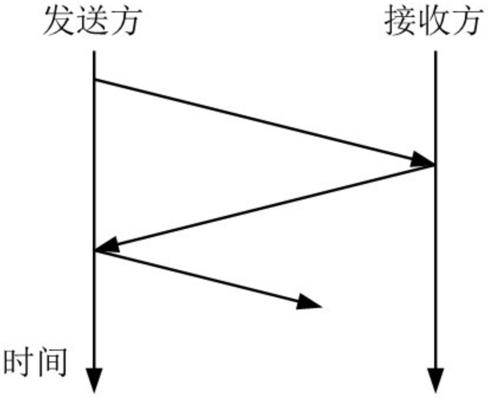

第1章 习题
题目取自王道《选择题做题本》《综合题做题本》· 选择题答案经答案速查逐题核对
先自己做完再展开答案；错题重点看解析中的排除思路。综合题务必动手算完每一步再看解答。
一、选择题 · 1.1 计算机网络概述（第 1～17 题）
第 1 题单选
计算机网络可被理解为（ ）
- A. 执行计算机数据处理的软件模块
- B. 由自治的计算机互连起来的集合体
- C. 多个处理器通过共享内存实现的紧耦合系统
- D. 用于共同完成一项任务的分布式系统
答案与解析
答案：B
解析：计算机网络是由自治计算机互连起来的集合体，包含三个关键点：自治计算机、互连、集合体。自治计算机由软件和硬件两部分组成，能完整地实现计算机的各种功能；互连指计算机之间能实现相互通信；集合体指所有使用通信线路及互联设备连接起来的自治计算机的集合。选项 C 和 D 分别指多机系统和分布式系统，均不符合。
第 2 题单选
下列不属于计算机网络功能的是（ ）
- A. 提高系统可靠性
- B. 提高工作效率
- C. 分散数据的综合处理
- D. 使各计算机相对独立
答案与解析
答案：D
解析：计算机网络的三大主要功能是数据通信、资源共享和分布式处理。计算机网络使各计算机之间的联系更加紧密，而非相对独立，故 D 不属于网络的功能（"自治"是组成网络的前提，不是网络带来的功能）。
第 3 题单选
下列关于网络中的计算机的描述中，正确的是（ ）
- A. 各自独立，没有联系
- B. 拥有独立的操作系统
- C. 互相干扰
- D. 拥有共同的操作系统
答案与解析
答案：B
解析：计算机网络是一些互连的、自治的计算机系统的集合。各计算机拥有独立的操作系统和硬件资源，它们之间是有联系的，通过网络协议和通信介质进行数据交换和资源共享。A 错在"没有联系"，C、D 与"自治"矛盾。
第 4 题单选
分组交换相比报文交换的主要改进是（ ）
- A. 差错控制更加完善
- B. 路由算法更加简单
- C. 传输单位更小且有固定的最大长度
- D. 传输单位更大且有固定的最大长度
答案与解析
答案：C
解析：相对于报文交换而言，分组交换将报文划分为一个个具有固定最大长度的分组，以分组为单位进行传输。传输单位更小且有上限，这是两种交换方式的本质区别；差错控制和路由算法并非主要改进点。
第 5 题单选
下列（ ）是分组交换网络的缺点。
- A. 信道利用率低
- B. 附加信息开销大
- C. 传播时延大
- D. 不同规格的终端很难相互通信
答案与解析
答案：B
解析：分组交换要求将数据分成等长的小数据段，每段都要加上控制信息（如目的地址），因此传送数据的总开销较大，B 正确。相比其他交换方式，分组交换信道利用率高，A 错；传播时延取决于传播介质及收发双方的距离，与交换方式无关，C 错；对各种交换方式，不同规格的终端都很难相互通信，因此这不是分组交换特有的缺点，D 错。
第 6 题多空选择
不同的数据交换方式有不同的性能。为了使数据在网络中的传输时延最小，首选的交换方式是 (①)；为保证数据无差错地传送，不应选用的交换方式是 (②)；分组交换对报文交换的主要改进是 (③)，这种改进产生的直接结果是 (④)。
- ① A. 电路交换 B. 报文交换 C. 分组交换
- ② A. 电路交换 B. 报文交换 C. 分组交换
- ③ A. 传输单位更小且有固定的最大长度 B. 传输单位更大且有固定的最大长度 C. 差错控制更完善 D. 路由算法更简单
- ④ A. 降低了误码率 B. 提高了数据传输速率 C. 减少传输时延 D. 增加传输时延
答案与解析
答案：①A ②A ③A ④C
解析：本题综合考查几种数据交换方式的特点。电路交换虽然建立连接的时延较大，但在数据传输期间一直占用链路，优点是传输时延小、通信实时性强，适用于交互式会话类通信，故 ① 选电路交换；缺点是建立连接时间长、系统效率低，不具备存储数据的能力、不具备差错控制的能力，故要保证无差错传送时不应选用电路交换，② 选 A。报文交换和分组交换都采用存储转发，传送的数据都要经过中间节点的若干存储、转发才能到达目的地，因此传输时延较大。报文交换传送数据的长度不固定且较长，分组交换要将传送的长报文分割为多个固定且长度有限的分组，故 ③ 选 A；这种改进使传输时延较报文交换的小，故 ④ 选 C。
第 7 题单选
下列说法中，（ ）是数据报方式的特点。
- A. 同一报文的不同分组可以经过不同的传输路径通过通信子网
- B. 同一报文的不同分组到达目的结点时顺序是确定的
- C. 适合于短报文的通信
- D. 同一报文的不同分组在路由选择时只需要进行一次
答案与解析
答案：A
解析：数据报方式是一种无连接的分组交换技术，它先将报文拆分成若干较小的数据段，加上地址等控制信息后构成分组，网络为每个分组独立地选择路由，转发的路径可能不同，因此分组不一定按序到达目的节点，A 正确、B 和 D 错误。虽然这样做会增加一些控制开销，但并不意味着数据报方式只适合于短报文的通信，C 错误。
第 8 题单选
计算机网络分为广域网、城域网和局域网，其划分的主要依据是（ ）
- A. 网络的作用范围
- B. 网络的拓扑结构
- C. 网络的通信方式
- D. 网络的传输介质
答案与解析
答案：A
解析：按分布范围分类：广域网、城域网、局域网、个人区域网；按拓扑结构分类：星形、总线形、环形、网状网络；按传输技术分类：广播式网络、点对点网络；按使用者分类：公用网、专用网；按数据交换技术分类：电路交换网、报文交换网、分组交换网。因此根据网络的覆盖范围（作用范围）可将网络主要分为广域网、城域网和局域网。
第 9 题单选
假设主机 A 和 B 之间的链路带宽为 100Mb/s，主机 A 的网卡速率为 1Gb/s，主机 B 的网卡速率为 10Mb/s，主机 A 给主机 B 发送数据的最高理论速率为（ ）
- A. 1Mb/s
- B. 10Mb/s
- C. 100Mb/s
- D. 1Gb/s
答案与解析
答案：B
解析：主机 A 给主机 B 发送数据的最高理论速率取决于链路带宽及主机 A、主机 B 的网卡速率中最小者，因为它是数据传输的瓶颈：\(\min(100\text{Mb/s},\,1\text{Gb/s},\,10\text{Mb/s}) = 10\text{Mb/s}\)。
第 10 题单选
某点对点链路的长度为 100km，若数据在该链路上的传输速率为 \(10^8\)m/s，链路带宽为 20Mb/s，已知一个已发送的分组的发送时延和传播时延相等，则该分组的大小为（ ）
- A. 20Kb
- B. 30Kb
- C. 40Kb
- D. 50Kb
答案与解析
答案：A
解析：链路的传播时延 \(= 100\text{km} \div 10^8\text{m/s} = 10^5\text{m} \div 10^8\text{m/s} = 1\text{ms}\)。发送时延等于传播时延，因此发送时延也为 1ms，所以分组的大小应为 \(20\text{Mb/s} \times 1\text{ms} = 20\text{Kb}\)。
第 11 题单选
在下图所示的采用存储转发方式的分组交换网中，主机 A 向 B 发送两个长度为 1000B 的分组，路由器处理单个分组的时延为 10ms（假设路由器同时最多只能处理一个分组，若在处理某个分组时有新的分组到达，则存入缓存区），忽略链路的传播时延，所有链路的数据传输速率为 1Mb/s，则分组从 A 发送开始到 B 接收完为止，需要的时间至少是（ ）

- A. 34ms
- B. 36ms
- C. 38ms
- D. 52ms
答案与解析
答案：B
解析：分组长度为 1000B，所有链路的数据传输速率为 1Mb/s，因此每段链路的发送时延为 \(1000\text{B} \div 1\text{Mb/s} = 8\text{ms}\)。第一个分组从 A 到达 B 的时间为 \(8 + 10 + 8 = 26\text{ms}\)，此后又经过 10ms，第二个分组才到达 B，所以总时间为 \(26 + 10 = 36\text{ms}\)。
第 12 题单选
如下图所示，主机 H1 和 H2 之间有三种可选的交换方式：电路交换、报文交换和分组交换，其中电路交换建立电路连接的时间为 2s，报文交换和分组交换都要经过由一个路由器连接的链路，分组大小为 5kb。三种交换方式的数据传输速率均为 2.5kb/s，忽略所有的传播时延、分组开销和不可预料的线路延迟，则下列说法中正确的是（ ）

- A. 若 H1 向 H2 发送 5kb 的数据，则电路交换最节省时间
- B. 若 H1 向 H2 发送 500kb 的数据，则电路交换和分组交换的时间相同
- C. 若 H1 向 H2 发送 10kb 的数据，则报文交换比分组交换更节省时间
- D. 若 H1 向 H2 发送 15kb 的数据，则报文交换比电路交换更节省时间
答案与解析
答案：B
解析：逐项计算：若发送 5kb 数据，电路交换的时间为 \(2 + 5\text{kb} \div 2.5\text{kb/s} = 4\text{s}\)，分组交换和报文交换的时间均为 \(5\text{kb} \div 2.5\text{kb/s} + 5\text{kb} \div 2.5\text{kb/s} = 4\text{s}\)，选项 A 错误。若发送 500kb 数据，电路交换的时间为 \(2 + 500\text{kb} \div 2.5\text{kb/s} = 202\text{s}\)，分组交换的时间为 \(500\text{kb} \div 2.5\text{kb/s} + 5\text{kb} \div 2.5\text{kb/s} = 202\text{s}\)，选项 B 正确。若发送 10kb 数据，报文交换的时间为 \(10\text{kb} \div 2.5\text{kb/s} + 10\text{kb} \div 2.5\text{kb/s} = 8\text{s}\)，分组交换的时间为 \(10\text{kb} \div 2.5\text{kb/s} + 5\text{kb} \div 2.5\text{kb/s} = 6\text{s}\)，选项 C 错误。若发送 15kb 数据，电路交换的时间为 \(2 + 15\text{kb} \div 2.5\text{kb/s} = 8\text{s}\)，报文交换的时间为 \(15\text{kb} \div 2.5\text{kb/s} + 15\text{kb} \div 2.5\text{kb/s} = 12\text{s}\)，选项 D 错误。
第 13 题单选 · 2010 统考真题
在下图所示的采用"存储-转发"方式的分组交换网络中，所有链路的数据传输速率为 100Mb/s，分组大小为 1000B，其中分组头大小为 20B。若主机 H1 向主机 H2 发送一个大小为 980000B 的文件，则在不考虑分组拆装时间和传播延迟的情况下，从 H1 发送开始到 H2 接收完为止，需要的时间至少是（ ）

- A. 80ms
- B. 80.08ms
- C. 80.16ms
- D. 80.24ms
答案与解析
答案：C
解析：分组大小为 1000B，其中首部占 20B，故每个分组携带的有效数据为 980B。文件总长为 980000B，需划分为 1000 个分组；每个分组含首部共 1000B，因此共需传输的数据量为 \(10^6\text{B}\)。由于所有链路的传输速率相同，沿最短路径传输时延最小，而最短路径经过 2 个交换机（共 3 段链路）。H1 发送完所有分组的时间为 \(10^6 \times 8\text{b} \div 100\text{Mb/s} = 80\text{ms}\)，此时最后一个分组刚离开 H1，该分组还需依次经过 2 个交换机（再通过 2 段链路）才能到达 H2，每段链路的传输时延为 \(r = 1000 \times 8\text{b} \div 100\text{Mb/s} = 0.08\text{ms}\)。因此，H2 接收完全部数据的时间为 \(80\text{ms} + 2r = 80.16\text{ms}\)。
另解（流水线思路）：分组交换的传输过程类似于流水线，每段链路的传输时延 \(r = 0.08\text{ms}\)，最短路径有 3 段链路，H2 接收完全部数据的时间为 \(3r + (m-1)r = 3 \times 0.08\text{ms} + (1000-1) \times 0.08\text{ms} = 80.16\text{ms}\)。第一个分组从流水线中流出所需时间为 \(3r\)，此后每隔 \(r\) 时间就有一个分组流出。
第 14 题单选 · 2013 统考真题
主机甲通过一个路由器（存储转发方式）与主机乙互连，两段链路的数据传输速率均为 10Mb/s，主机甲分别采用报文交换和分组大小为 10kb 的分组交换向主机乙发送一个大小为 8Mb（\(1\text{M}=10^6\)）的报文。若忽略链路传播延迟、分组头开销和分组拆装时间，则两种交换方式完成该报文传输所需的总时间分别为（ ）
- A. 800ms、1600ms
- B. 801ms、1600ms
- C. 1600ms、800ms
- D. 1600ms、801ms
答案与解析
答案：D
解析：传输路径为：甲—路由器—乙。在题中未明确说明的情况下，不考虑排队时延和处理时延，只考虑发送时延和传播时延；本题已忽略传播时延，因此只需计算报文交换和分组交换的发送时延。
报文交换：采用整报文传输，报文大小为 8Mb（\(1\text{M}=10^6\)）。每个节点（包括主机甲和路由器）在转发该报文前需要完整接收，因此需经历两次发送过程：甲向路由器发送报文，发送时延 \(T = 8\text{Mb} \div 10\text{Mb/s} = 0.8\text{s}\)；路由器向乙转发该报文，同样需 0.8s。总时延为 1.6s，即 1600ms。
分组交换：分组大小为 10kb（\(1\text{k}=10^3\)），忽略分组头开销，每个分组携带 10kb 数据。报文总长为 8Mb，分组数 \(m = 8\text{Mb} \div 10\text{kb} = 800\)。甲与乙通过一个路由器相连，构成 2 段链路（2 个流水段），每段链路的发送时延 \(r = 10\text{kb} \div 10\text{Mb/s} = 1\text{ms}\)。第一个分组从甲发出后，需经过 2 段链路才能到达乙，耗时 \(2r\)；此后流水线满载，每隔 \(r\) 时间就有一个分组到达乙。因此传输 \(m = 800\) 个分组所需的总时间为 \(t = 2r + (m-1)r = 2 + (800-1) \times 1 = 801\text{ms}\)。
第 15 题单选 · 2023 统考真题
在下图所示的分组交换网络中，主机 H1 和 H2 通过路由器互连，2 段链路的带宽均为 100Mb/s，时延带宽积（单向传播时延 × 带宽）均为 1000b。若 H1 向 H2 发送一个大小为 1MB 的文件，分组长度为 1000B，则从 H1 开始发送的时刻起到 H2 收到文件全部数据时刻止，所需的时间至少是（ ）（注：\(1\text{M}=10^6\)）

- A. 80.02ms
- B. 80.08ms
- C. 80.09ms
- D. 80.10ms
答案与解析
答案：D
解析：文件大小为 1MB，分组长度为 1000B，分组数量为 \(1\text{MB} \div 1000\text{B} = 1000\)。一个分组从 H1 到 H2 所需的时间 = H1 的发送时延 \(t_1\) + H1 到路由器的传播时延 \(t_2\) + 路由器的发送时延 \(t_3\) + 路由器到 H2 的传播时延 \(t_4\)，其中 \(t_1 = t_3 = 1000\text{B} \div 100\text{Mb/s} = 0.08\text{ms}\)，\(t_2 = t_4 = 1000\text{b} \div 100\text{Mb/s} = 0.01\text{ms}\)。因此一个分组从 H1 到 H2 的端到端时延为 \((0.08 + 0.01) \times 2 = 0.18\text{ms}\)。H1 发送前 999 个分组所需的时间为 \(999 t_1 = 79.92\text{ms}\)，此时第 1000 个分组刚刚开始发送，它还需 0.18ms 才能到达 H2。因此从 H1 开始发送到 H2 收到全部数据所需的最短时间为 \(79.92 + 0.18 = 80.10\text{ms}\)。
第 16 题单选 · 2024 统考真题
若某分组交换网络及每段链路的带宽如下图所示，则 H1 到 H2 的最大吞吐量约为（ ）

- A. 1Mb/s
- B. 10Mb/s
- C. 100Mb/s
- D. 1000Mb/s
答案与解析
答案：B
解析：H1 到 H2 有三条路径。H1 和 H2 各自连接路由器的链路带宽均为 10Mb/s，这是所有路径共有的端侧链路。假设每个数据段为 10Mb，分别分析各路径的吞吐量：
路径一：中间两段链路带宽均为 1000Mb/s，受限于 H1、H2 直连路由器的链路带宽 10Mb/s，无论中间链路有多快，数据从 H1 发出需 1s（\(10\text{Mb} \div 10\text{Mb/s}\)，受限于自身的 10Mb/s 出口），到达 H2 前最后一跳也需 1s。吞吐量约为 10Mb/s。
路径二：中间一段链路带宽为 1Mb/s，H1 发送一个数据段需 1s，但经过中间 1Mb/s 链路时，转发时延为 \(10\text{Mb} \div 1\text{Mb/s} = 10\text{s}\)（成为瓶颈），因此 H2 每隔 10s 收到一个数据段，吞吐量约为 1Mb/s。
路径三：中间两段链路带宽均为 100Mb/s，与路径一的分析类似，吞吐量约为 10Mb/s。由此可见，端到端的吞吐量由路径中带宽最小的链路（瓶颈）决定，H1 到 H2 的最大吞吐量取三条路径中的最大者，约为 10Mb/s。
第 17 题单选
某网络拓扑及各链路带宽如下图所示。网络按电路交换方式运行时，主机 H1 与 H2 建立一条带宽为 10Mb/s 的电路，建立电路的时间为 32μs；按分组交换方式运行时，分组长度为 400B，忽略分组首部开销。现主机 H1 向 H2 发送一个 2MB（\(1\text{M}=10^6\)）的文件，分别采用电路交换、报文交换、分组交换方式时，H2 至少分别需要 \(T_{cs}\)、\(T_{ms}\)、\(T_{ps}\) 的时间才能接收到全部文件内容，则 \(T_{cs}\)、\(T_{ms}\)、\(T_{ps}\) 三者的大小关系是（ ）

- A. \(T_{cs} > T_{ms} > T_{ps}\)
- B. \(T_{ms} > T_{ps} > T_{cs}\)
- C. \(T_{ms} > T_{cs} > T_{ps}\)
- D. \(T_{ps} > T_{ms} > T_{cs}\)
答案与解析
答案：B
解析：采用电路交换时，\(T_{cs} =\) 电路建立时间 32μs + 文件传输时间 \(2\text{MB} \div 10\text{Mb/s} = 32\text{μs} + 1.6\text{s}\)。采用报文交换时，整个报文需要逐跳存储转发，\(T_{ms} = 2\text{MB} \div 10\text{Mb/s} + 2\text{MB} \div 100\text{Mb/s} + 2\text{MB} \div 1000\text{Mb/s} = 1.776\text{s}\)。采用分组交换时，分组数为 \(2\text{MB} \div 400\text{B} = 5000\)，第一个分组从 H1 到 H2 的传输时延 \(= 400\text{B} \div 10\text{Mb/s} + 400\text{B} \div 100\text{Mb/s} + 400\text{B} \div 1000\text{Mb/s} = 355.2\text{μs}\)；之后每 320μs 到达一个分组，故 \(T_{ps} = 355.2\text{μs} + 320 \times 4999\text{μs} = 1.6\text{s} + 35.2\text{μs}\)。因此 \(T_{ms} > T_{ps} > T_{cs}\)。
选择题 · 1.2 计算机网络体系结构与参考模型（第 18～55 题）
第 18 题单选
下列选项中，不属于对网络模型进行分层的目标的是（ ）
- A. 提供标准语言
- B. 定义功能执行的方法
- C. 定义标准界面
- D. 增加功能之间的独立性
答案与解析
答案：B
解析：分层属于计算机网络体系结构的范畴，选项 A、C 和 D 均是网络模型分层的目的，而分层的目的不包括定义功能执行的具体方法——功能如何实现属于"实现"问题，不由体系结构规定。
第 19 题单选
将用户数据分成一个个数据块传输的优点不包括（ ）
- A. 减少延迟时间
- B. 提高错误控制效率
- C. 使多个应用更公平地使用共享通信介质
- D. 有效数据在协议数据单元 (PDU) 中所占比例更大
答案与解析
答案：D
解析：将用户数据分成一个个数据块传输，因为每块均需加入控制信息，所以实际上会使有效数据在 PDU 中所占的比例更小。其他各项均为其优点。
第 20 题单选
协议是指在（ ）之间进行通信的规则或约定。
- A. 同一结点的上下层
- B. 不同结点
- C. 相邻实体
- D. 不同结点对等实体
答案与解析
答案：D
解析：协议是为对等层实体之间进行逻辑通信而定义的规则的集合，即不同结点上的对等实体之间遵循的规则。同一结点上下层之间交互称为接口/服务，而非协议。
第 21 题单选
OSI 参考模型中的实体指的是（ ）
- A. 实现各层功能的规则
- B. 上下层之间进行交互时所要的信息
- C. 各层中实现该层功能的软件或硬件
- D. 同一结点中相邻两层相互作用的地方
答案与解析
答案：C
解析：实体是指每层中实现该层功能的软件或硬件，可以是程序、模块、子程序或设备。任何可发送或接收信息的硬件或软件进程都可称为实体。
第 22 题单选
在 OSI 参考模型中，第 \(n\) 层与它之上的第 \(n+1\) 层的关系是（ ）
- A. 第 \(n\) 层为第 \(n+1\) 层提供服务
- B. 第 \(n+1\) 层为从第 \(n\) 层接收的报文添加一个报头
- C. 第 \(n\) 层使用第 \(n+1\) 层提供的服务
- D. 第 \(n\) 层和第 \(n+1\) 层相互没有影响
答案与解析
答案：A
解析：服务是指下层为紧邻的上层提供的功能调用，每层只能调用紧邻下层提供的服务（通过服务访问点），而不能跨层调用。因此第 \(n\) 层为第 \(n+1\) 层提供服务，A 正确、C 颠倒了方向。添加报头是发送方自上而下的封装过程，高层为从下层收到的数据（本层 PDU 相关内容）加头，B 表述错误；上下层通过服务访问点交互，并非相互没有影响，D 错误。
第 23 题单选
关于计算机网络及其结构模型，下列几种说法中错误的是（ ）
- A. 世界上第一个计算机网络是 ARPAnet
- B. Internet 最早起源于 ARPAnet
- C. 国际标准化组织 (ISO) 设计出了 OSI/RM 参考模型，即实际执行的标准
- D. TCP/IP 参考模型分为 4 个层次
答案与解析
答案：C
解析：ISO 设计了开放系统互连参考模型（OSI/RM），但实际执行的通用标准是 TCP/IP 标准，OSI/RM 并非实际执行的标准，C 错误。A、B、D 均为正确说法。
第 24 题单选
（ ）是计算机网络中 OSI 参考模型的 3 个主要概念。
- A. 服务、接口、协议
- B. 结构、模型、交换
- C. 子网、层次、端口
- D. 广域网、城域网、局域网
答案与解析
答案：A
解析：计算机网络要做到有条不紊地交换数据，就必须遵守一些事先约定的原则，这些原则就是协议。在协议的控制下，两个对等实体之间的通信使得本层能够向上一层提供服务。要实现本层协议，还要使用下一层提供的服务，而提供服务就是交换信息，交换信息就需要通过接口，所以说服务、接口、协议是 OSI 参考模型的 3 个主要概念。
第 25 题单选
下列关于网络协议三要素的描述中，正确的是（ ）
- A. 数据格式、编码、信号电平
- B. 数据格式、控制信息、速度匹配
- C. 语法、语义、同步
- D. 编码、控制信息、同步
答案与解析
答案：C
解析：描述网络协议的三要素是语法、语义和同步（时序）：语法规定数据与控制信息的结构或格式，语义规定需要发出何种控制信息、完成何种动作以及做出何种响应，同步（时序）规定事件实现顺序的详细说明。
第 26 题单选
释放 TCP 连接的四次挥手报文的先后关系，属于网络协议三要素中的（ ）
- A. 语法
- B. 时序
- C. 语义
- D. 服务
答案与解析
答案：B
解析：网络协议三要素中的时序（或称同步）定义了通信双方的时序关系，TCP 通信双方通过"四次挥手"释放连接，它规定了发送 FIN、ACK、FIN 和 ACK 报文的先后顺序，属于时序要素。
第 27 题单选
下图是 TCP 报文段的首部格式，它描述的是网络协议三要素中的（ ）

I. 语法 II. 语义 III. 时序 (同步)
- A. 仅 I
- B. 仅 II
- C. 仅 III
- D. I、II 和 III
答案与解析
答案：A
解析：网络协议三要素中的语法定义所交换信息的格式，TCP 首部格式规定了各字段（源端口、目的端口、序号、确认号等）的结构与布局，因此体现了语法的要素。
第 28 题单选
下列关于 OSI 参考模型的描述中，错误的是（ ）
- A. OSI 参考模型定义了开放系统的层次结构
- B. OSI 参考模型定义了各层所包括的可能的服务
- C. OSI 参考模型作为一个框架协调组织各层协议的制定
- D. OSI 参考模型定义了各层接口的实现方法
答案与解析
答案：D
解析：OSI 参考模型不仅划分了层次结构，还定义了各层可能提供的服务，但并未规定协议的具体实现，而是描述了一些概念和原则，用来协调和组织各层所用的协议。OSI 参考模型并未定义各层接口的实现方法，而把具体的实现细节留给了各个协议和标准，选项 D 错误。
第 29 题单选
负责将比特转换成电信号进行传输的层是（ ）
- A. 应用层
- B. 网络层
- C. 数据链路层
- D. 物理层
答案与解析
答案：D
解析：物理层为数据链路层提供二进制流（比特流）的传输服务，涉及信号的编码、解码和同步等，负责将比特转换成电信号进行传输，选项 D 正确。
第 30 题单选
下列关于 OSI 参考模型的物理层功能的描述中，错误的是（ ）
- A. 比特 0 和 1 使用何种电信号表示
- B. 传输能否在两个方向上同时进行
- C. 1 个比特持续多长时间
- D. 避免快速发送方"淹没"慢速接收方
答案与解析
答案：D
解析：避免快速发送方"淹没"慢速接收方，描述的是流量控制的作用，属于数据链路层或传输层的功能。物理层只负责透明地传送比特流（如比特的信号表示、单双工、传输速率等），不涉及流量控制的功能，选项 D 错误。
第 31 题单选
OSI 参考模型中的数据链路层不具有（ ）功能。
- A. 物理寻址
- B. 流量控制
- C. 差错检验
- D. 拥塞控制
答案与解析
答案：D
解析：数据链路层在不可靠的物理介质上提供可靠的传输，作用包括物理寻址、组帧、流量控制、差错检验、数据重发等。网络层和传输层才具有拥塞控制的功能，数据链路层不具有拥塞控制功能。
第 32 题单选
下列能够最好地描述 OSI 参考模型的数据链路层功能的是（ ）
- A. 提供用户和网络的接口
- B. 处理信号通过介质的传输
- C. 控制报文通过网络的路由选择
- D. 保证数据正确的顺序和完整性
答案与解析
答案：D
解析：OSI 参考模型的数据链路层向上提供可靠的传输服务，在差错检测的基础上，增加了帧编号、确认和重传机制，因此保证了数据正确的顺序和完整性，D 正确。选项 A 是应用层的功能，选项 B 是物理层的功能，选项 C 是网络层的功能。
第 33 题单选
当数据由端系统 A 传送至端系统 B 时，不参与数据封装工作的是（ ）
- A. 物理层
- B. 数据链路层
- C. 网络层
- D. 表示层
答案与解析
答案：A
解析：物理层以 0、1 比特流的形式透明地传输数据链路层提交的帧。网络层和表示层都为上层提交的数据加上首部，数据链路层为上层提交的数据加上首部和尾部，然后提交给下一层。物理层不存在下一层，自然也就不用封装。
第 34 题单选
在 OSI 参考模型中，实现端到端的应答、分组排序和流量控制功能的协议层是（ ）
- A. 会话层
- B. 网络层
- C. 传输层
- D. 数据链路层
答案与解析
答案：C
解析：只有传输层及以上各层的通信才能称为端到端，选项 B、D 错。会话层管理不同主机间进程的对话，而传输层实现端到端的应答、分组排序和流量控制功能。
第 35 题单选
在 ISO/OSI 参考模型中，可同时提供无连接服务和面向连接服务的是（ ）
- A. 物理层
- B. 数据链路层
- C. 网络层
- D. 传输层
答案与解析
答案：C
解析：本题容易误选选项 D。ISO/OSI 参考模型在网络层支持无连接和面向连接的通信，但在传输层仅支持面向连接的通信；TCP/IP 模型在网络层仅有无连接的通信，而在传输层支持无连接和面向连接的通信。两类协议栈的区别是联考的考点，而这个区别是常考点。
第 36 题单选
在 OSI 参考模型中，当两台计算机进行文件传输时，为防止中间出现网络故障而重传整个文件的情况，可通过在文件中插入同步点来解决，这个动作发生在（ ）
- A. 表示层
- B. 会话层
- C. 网络层
- D. 应用层
答案与解析
答案：B
解析：在 OSI 参考模型中，会话层的两个主要服务是会话管理和同步。会话层使用检验点（同步点）使通信会话在通信失效时从检验点继续恢复通信，实现数据同步。
第 37 题单选
数据的格式转换及压缩属于 OSI 参考模型中（ ）的功能。
- A. 应用层
- B. 表示层
- C. 会话层
- D. 传输层
答案与解析
答案：B
解析：OSI 参考模型表示层的功能有数据解密与加密、压缩、格式转换等，即处理与数据表示相关的问题。
第 38 题单选
OSI 参考模型中（ ）通过设置检验点，使通信双方在通信失效时可从检验点恢复通信。
- A. 传输层
- B. 网络层
- C. 表示层
- D. 会话层
答案与解析
答案：D
解析：会话层的主要功能是建立、管理和终止进程间的会话，以及使用检查点（或称检验点）使会话在通信失效时从检验点继续恢复通信，实现数据同步。
第 39 题单选
下列说法中，正确描述了 OSI 参考模型中数据的封装过程的是（ ）
- A. 数据链路层在分组上仅增加了源物理地址和目的物理地址
- B. 网络层将高层协议产生的数据封装成分组，并增加第三层的地址和控制信息
- C. 传输层将数据流封装成数据帧，并增加可靠性和流控制信息
- D. 表示层将高层协议产生的数据分割成数据段，并增加相应的源和目的端口信息
答案与解析
答案：B
解析：数据链路层在分组上除增加源和目的物理地址外，也增加控制信息，A 错；传输层的 PDU 不称为帧，C 错；表示层不负责将高层协议产生的数据分割成数据段，负责增加相应源和目的端口信息的应是传输层，D 错。选项 B 正确描述了 OSI 参考模型中数据的封装过程，数据经过网络层后，只是增加了第三层 PCI（协议控制信息）。
第 40 题多空选择
在 OSI 参考模型中，提供流量控制功能的层是第 (①) 层；提供建立、维护和拆除端到端的连接的层是 (②)；为数据分组提供在网络中路由的功能的是 (③)；传输层提供 (④) 的数据传送；为网络层实体提供数据发送和接收功能及过程的是 (⑤)。
- ① A. 1、2、3 B. 2、3、4 C. 3、4、5 D. 4、5、6
- ② A. 物理层 B. 数据链路层 C. 会话层 D. 传输层
- ③ A. 物理层 B. 数据链路层 C. 网络层 D. 传输层
- ④ A. 主机进程之间 B. 网络之间 C. 数据链路之间 D. 物理线路之间
- ⑤ A. 物理层 B. 数据链路层 C. 会话层 D. 传输层
答案与解析
答案：①B ②D ③C ④A ⑤B
解析：在计算机网络中，流量控制指的是通过限制发送方发出的数据流量，使其发送速率不超过接收方接收速率的一种技术。流量控制功能可存在于数据链路层及其之上的各层中，目前提供流量控制功能的主要是数据链路层、网络层和传输层（即第 2、3、4 层），故 ① 选 B。在 OSI 参考模型中，物理层实现比特流在传输介质上的透明传输；数据链路层将有差错的物理线路变成无差错的数据链路，实现相邻节点之间即点到点的数据传输；网络层的主要功能是路由选择、拥塞控制和网际互连等，实现主机到主机的通信，故 ③ 选 C；传输层实现主机的进程之间即端到端的数据传送，故 ② 选 D、④ 选 A。下一层为上一层提供服务，而网络层的下一层是数据链路层，所以为网络层实体提供数据发送和接收功能及过程的是数据链路层，⑤ 选 B。
第 41 题单选
在 OSI 参考模型中，（ ）利用通信子网提供的服务实现两个进程之间的端到端通信。
- A. 网络层
- B. 传输层
- C. 会话层
- D. 表示层
答案与解析
答案：B
解析：在 OSI 参考模型中，数据链路层提供链路上相邻节点之间的逻辑通信，网络层提供主机之间的逻辑通信，传输层在运行于不同主机上的进程之间（端到端）提供逻辑通信，即利用通信子网提供的服务实现两个进程之间的端到端通信。
第 42 题单选
互联网采用的核心技术是（ ）
- A. TCP/IP
- B. 局域网技术
- C. 远程通信技术
- D. 光纤技术
答案与解析
答案：A
解析：协议是网络上计算机之间进行信息交换和资源共享时共同遵守的约定，没有协议的存在，网络的作用也就无从谈起。在互联网中应用的网络协议是采用分组交换技术的 TCP/IP，它是互联网的核心技术。
第 43 题单选
在 TCP/IP 模型中，（ ）处理关于可靠性、流量控制和错误校正等问题。
- A. 网络接口层
- B. 网际层
- C. 传输层
- D. 应用层
答案与解析
答案：C
解析：TCP/IP 模型的传输层提供端到端的通信，并且负责差错控制和流量控制，可以提供可靠的面向连接服务或不可靠的无连接服务，即处理关于可靠性、流量控制和错误校正等问题。
第 44 题单选
上下邻层实体之间的接口称为服务访问点，应用层的服务访问点也称（ ）
- A. 用户接口
- B. 网卡接口
- C. IP 地址
- D. MAC 地址
答案与解析
答案：A
解析：在同一系统中，相邻两层的实体交换信息的逻辑接口称为服务访问点 (SAP)，\(N\) 层的 SAP 是 \(N+1\) 层可以访问 \(N\) 层服务的地方。SAP 用于区分不同的服务类型。在 5 层体系结构中，数据链路层的服务访问点为帧的"类型"字段，网络层的服务访问点为 IP 数据报的"协议"字段，传输层的服务访问点为"端口号"字段，应用层的服务访问点为"用户接口"。
第 45 题多空选择
在 OSI 参考模型中，各层都有差错控制过程，指出以下每种差错发生在哪些层中。噪声使传输链路上的一个 0 变成 1 或一个 1 变成 0 (①)；收到一个序号错误的目的帧 (②)；一台打印机正在打印，突然收到一个错误指令要打印头回到本行的开始位置 (③)。
- ① A. 物理层 B. 网络层 C. 数据链路层 D. 会话层
- ② A. 物理层 B. 网络层 C. 数据链路层 D. 会话层
- ③ A. 物理层 B. 网络层 C. 应用层 D. 会话层
答案与解析
答案：①A ②C ③C
解析：① 噪声使传输链路上的比特（0 与 1）出错，属于物理层负责的比特流透明传输问题，物理层要正确、透明地传输比特流 (0,1)。② 帧是数据链路层的 PDU，帧的差错检测（如序号错误的目的帧）是数据链路层的功能。③ 打印机是向用户提供服务的，运行的是应用层的程序，该差错发生在应用层。
第 46 题单选 · 2009 统考真题
在 OSI 参考模型中，自下而上第一个提供端到端服务的层次是（ ）
- A. 数据链路层
- B. 传输层
- C. 会话层
- D. 应用层
答案与解析
答案：B
解析：在 OSI 参考模型中，传输层是自下而上第一个提供端到端服务的层，通过端口号实现应用进程间的逻辑通信。数据链路层仅负责相邻节点（如交换机、路由器等中间设备）之间的通信，而网络层提供主机到主机的通信，不提供面向应用进程的服务。
第 47 题单选 · 2010 统考真题
下列选项中，不属于网络体系结构所描述的内容是（ ）
- A. 网络的层次
- B. 每层使用的协议
- C. 协议的内部实现细节
- D. 每层必须完成的功能
答案与解析
答案：C
解析：网络体系结构是指各层及其协议的集合，涵盖网络的层次划分、每层的功能及所用的协议，因此选项 A、B、D 均属于描述内容。而协议的内部实现细节属于实现问题，不由体系结构规定——体系结构是抽象的，而实现是具体的。
第 48 题单选 · 2013 统考真题
在 OSI 参考模型中，功能需由应用层的相邻层实现的是（ ）
- A. 对话管理
- B. 数据格式转换
- C. 路由选择
- D. 可靠数据传输
答案与解析
答案：B
解析：在 OSI 参考模型中，应用层的相邻下层是表示层（第 6 层），负责处理与数据表示相关的问题，其主要功能包括数据字符集转换、数据格式转换、文本压缩以及加密与解密等，故选 B。对话管理是会话层的功能，路由选择是网络层的功能，可靠数据传输主要由传输层提供。
第 49 题单选 · 2014 统考真题
在 OSI 参考模型中，直接为会话层提供服务的是（ ）
- A. 应用层
- B. 表示层
- C. 传输层
- D. 网络层
答案与解析
答案：C
解析：在 OSI 参考模型中，各层直接为其上一层提供服务，而会话层的下一层是传输层，因此直接为会话层提供服务的是传输层。
第 50 题单选 · 2016 统考真题
在 OSI 参考模型中，路由器、交换机 (Switch)、集线器 (Hub) 实现的最高功能层分别是（ ）
- A. 2、2、1
- B. 2、2、2
- C. 3、2、1
- D. 3、2、2
答案与解析
答案：C
解析：集线器 (Hub) 是多端口中继器，工作在物理层（第 1 层）；以太网交换机 (Switch) 是多端口网桥，工作在数据链路层（第 2 层）；路由器是网络层设备，最高工作在第 3 层。因此，三者实现的最高功能层分别为网络层、数据链路层和物理层，即 3、2、1。
第 51 题单选 · 2017 统考真题
假设 OSI 参考模型的应用层欲发送 400B 的数据（无拆分），除物理层和应用层外，其他各层在封装 PDU 时均引入 20B 的额外开销，则应用层的数据传输效率约为（ ）
- A. 80%
- B. 83%
- C. 87%
- D. 91%
答案与解析
答案：A
解析：OSI 参考模型共 7 层，除了物理层和应用层，中间 5 层每层引入 20B 开销，共增加 \(5 \times 20\text{B} = 100\text{B}\) 开销。原始数据为 400B，总传输量为 \(400\text{B} + 100\text{B} = 500\text{B}\)，故传输效率为 \(400\text{B} \div 500\text{B} = 80\%\)。
第 52 题单选 · 2019 统考真题
OSI 参考模型的第 5 层（自下而上）完成的主要功能是（ ）
- A. 差错控制
- B. 路由选择
- C. 会话管理
- D. 数据表示转换
答案与解析
答案：C
解析：OSI 参考模型自下而上的第 5 层为会话层，主要功能是管理和协调不同主机上各种进程之间的通信（对话），即负责建立、管理和终止应用程序间的会话。
第 53 题单选 · 2020 统考真题
下图描述的协议要素是（ ）

I. 语法 II. 语义 III. 时序
- A. 仅 I
- B. 仅 II
- C. 仅 III
- D. I、II 和 III
答案与解析
答案：C
解析：协议由语法、语义和时序三要素组成：语法规定数据格式，语义定义控制信息含义，时序规定交互顺序。题图中发送方与接收方按特定顺序交互（图中有"时间"轴和报文往来的先后次序），体现了协议的时序要素。
第 54 题单选 · 2021 统考真题
在 TCP/IP 参考模型中，由传输层相邻的下一层实现的主要功能是（ ）
- A. 对话管理
- B. 路由选择
- C. 端到端报文段传输
- D. 节点到节点流量控制
答案与解析
答案：B
解析：在 TCP/IP 模型中，传输层的下一层是网际层，其主要功能是为分组选择路由并转发，即实现路由选择；它提供无连接、不可靠的尽力而为的服务，不保证有序交付。端到端报文段传输属于传输层功能，对话管理由应用层处理，TCP/IP 网际层不提供节点到节点的流量控制功能。
第 55 题单选 · 2022 统考真题
在 ISO/OSI 参考模型中，实现两个相邻结点间流量控制功能的是（ ）
- A. 物理层
- B. 数据链路层
- C. 网络层
- D. 传输层
答案与解析
答案：B
解析：在 OSI 参考模型中，流量控制功能在多个层次存在：数据链路层实现相邻节点之间的流量控制，网络层关注整个网络中的拥塞与流量调节，传输层则提供端到端的流量控制。本题明确要求"两个相邻结点间"的流量控制，因此由数据链路层实现。
二、综合题
综合题 11.1 计算机网络概述
假定有一个通信协议，每个分组都引入 100B 的开销用于首部和组帧。现在使用这个协议发送 \(10^6\)B 的数据，但在传送的过程中有 1B 被破坏，因而包含该字节的那个分组被丢弃。试对 1000B 和 20000B 的分组的有效数据大小，分别计算"开销 + 丢失"字节的总数量。为使"开销 + 丢失"字节的总数量最小，分组数据大小的最佳值是多少？
答案与解析
解答：设 \(D\) 是分组数据的大小，需要的分组数量 \(= 10^6 \div D\)，开销 \(= 100 \times 10^6 \div D\)（被丢弃分组的首部也已计入开销），因此"开销 + 丢失" \(= 100 \times 10^6 \div D + D\)。
当 \(D = 1000\) 时，"开销 + 丢失" \(= 100 \times 10^6 \div 1000 + 1000 = 101000\text{B}\)。
当 \(D = 20000\) 时，"开销 + 丢失" \(= 100 \times 10^6 \div 20000 + 20000 = 25000\text{B}\)。
设"开销 + 丢失"字节总数量为 \(y\)，\(y = 10^8 \div D + D\)，求微分得 \(\mathrm{d}y = (1 - 10^8 \div D^2)\,\mathrm{d}D\)。
当 \(D = 10^4\) 时，\(\mathrm{d}y / \mathrm{d}D = 0\)，所以分组数据大小的最佳值是 10000B。
综合题 21.1 计算机网络概述
考虑一个最大距离为 2km 的局域网，当带宽为多大时，传播延时（传播速率为 \(2 \times 10^8\)m/s）等于 100B 分组的发送延时？对于 512B 分组，结果又当如何？
答案与解析
解答：先求传播时延：传播时延 \(= 2 \times 10^3\text{m} \div (2 \times 10^8\text{m/s}) = 10^{-5}\text{s} = 10\text{μs}\)。
1) 分组大小为 100B：假设带宽大小为 \(x\)，要使传播时延等于发送时延，带宽如下：
$$x = 100\text{B} \div 10\text{μs} = 10\text{MB/s} = 80\text{Mb/s}$$
2) 分组大小为 512B：假设带宽大小为 \(y\)，要使传播时延等于发送时延，带宽如下：
$$y = 512\text{B} \div 10\text{μs} = 51.2\text{MB/s} = 409.6\text{Mb/s}$$
结论：带宽应分别等于 80Mb/s 和 409.6Mb/s。
综合题 31.1 计算机网络概述
在两台计算机之间传输一个文件有两种可行的确认策略。第一种策略把文件截成分组，接收方逐个确认分组，但就整体而言，文件没有得到确认。第二种策略不确认单个分组，但当文件全部收到后，对整个文件予以确认。请讨论这两种方式的优缺点。
答案与解析
解答：若网络容易丢失分组，则对每个分组逐一进行确认较好，此时仅重传丢失的分组。另一方面，若网络高度可靠，则在不发生差错的情况下，仅在整个文件传送的结尾发送一次确认，以减少确认次数，进而节省带宽。不过，即使只有单个分组丢失，也要重传整个文件。